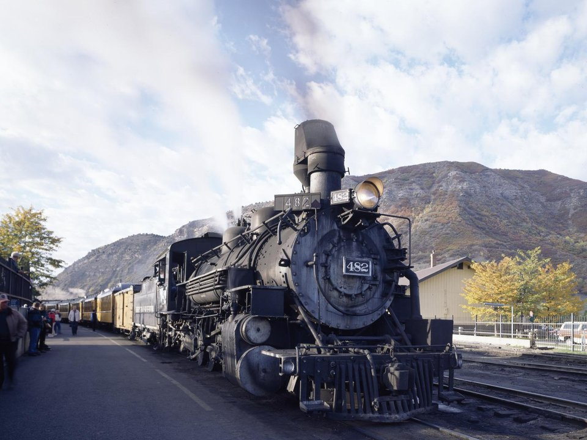

Downtown · Historic hotel
Strater Hotel
An 1887 hotel with walnut antiques and the Diamond Belle Saloon.
Official details for Strater HotelSteam trains and cliff dwellings.
Durango grew up around the railroad, and its 1882 narrow-gauge line still runs coal-fired steam trains 45 miles up the Animas River canyon to the mining town of Silverton. Land at Durango–La Plata County, stay at the Victorian Strater Hotel, ride the train through the San Juans, and save a day for Mesa Verde National Park, where the Ancestral Puebloans built whole villages into the cliffs eight centuries ago.

Time illustration: direct distance at 150 KTAS plus 15 minutes for departure and arrival, matching the discovery page. Use ForeFlight for your actual flight plan.
Check the weekend weather at both ends → Flight category, your minimums and the crosswind on the best runway.
KDRO, Durango–La Plata County, is a non-towered airport at 6,689 feet with a 9,201-foot runway, about 20 minutes southeast of downtown.
Durango–La Plata County Airport, Durango, CO
Long runway but high elevation; summer density altitude is significant. A landing fee applies. Animas Air Park (00C), closer to town, is a small alternative. No live fuel price is shown.
Mountain flying: high density altitude on summer afternoons, mountain wave and strong winds over the ridges, afternoon thunderstorms from July to September, and winter snow and icing. Consider a mountain-flying course before you go. About 1420 nm from Myrtle Beach: two long days each way with several fuel stops. Plan a week, or overnight on the way out and back.
Rates and availability need travel dates. Book summer train weekends early.
An 1887 hotel with walnut antiques and the Diamond Belle Saloon.
Official details for Strater HotelA Victorian hotel next to the train depot.
Official details for General Palmer HotelPrices and availability for your dates, through our partner Stay22. This is an affiliate link: we may earn a commission at no cost to you. The picks above are never paid.
Reserve weekend dinners.
A Durango steakhouse since 1972.
Official details for Ore HouseLocal beer and pub food downtown.
Official details for Steamworks BrewingRestaurants on Main Avenue.
Visit Durango for More restaurantsReserve train seats and Mesa Verde cliff-dwelling tours ahead.
This prototype links to the local visitor site. It does not yet match events to your travel dates.
Full-length steam trips through the canyon.
D&SNGRR for Train to SilvertonRanger-guided tours at Mesa Verde.
NPS for Cliff-dwelling toursA holiday ride for families.
D&SNGRR for Polar Express trainCheck the local calendar when choosing a weekend, and confirm dates and tickets with the organizer.
A sample Durango weekend. This is a two-day flight each way; plan a week. No bookings or availability confirmed.
Land at KDRO mid-morning.
Lunch on Main Avenue.
The Animas River Trail, then back to the airport.
Land at KDRO, subject to weather, density altitude and your actual flight plan.
Walk Main Avenue and the river trail.
Dinner at Steamworks.
The steam train to Silverton.
Lunch in Silverton, then back by train or bus.
Dinner at the Ore House.
Mesa Verde, then fly home from Durango.
Compute takeoff performance for the morning temperature and allow time at the FBO.
Mountain afternoons bring wind, turbulence and storms; leave early.
The steam train to Silverton.
Mesa Verde National Park.
Dinner at the Ore House.
This guide is part of a multi-stop flying trip. Set your dates and aircraft, then swap stops to make it your own.
These details make the difference between an appealing list and a usable getaway.
Train seats, hotel, then Mesa Verde tours.
About 1,420 nm: two days each way.
Mesa Verde and Silverton are higher still; take it easy.
May to October.
Picks and links reviewed by WingAway Weekends. Hours, prices, menus and availability change often, so confirm directly with each place before booking. Spotted something out of date, or have a favorite we missed? Email us at hello@wingawayweekends.com.
WingAway Weekends helps you discover the destination. Use ForeFlight and current official aviation information for route, performance, weather, NOTAMs and preflight decisions. Flight planning and PIC responsibility stay with the pilot.